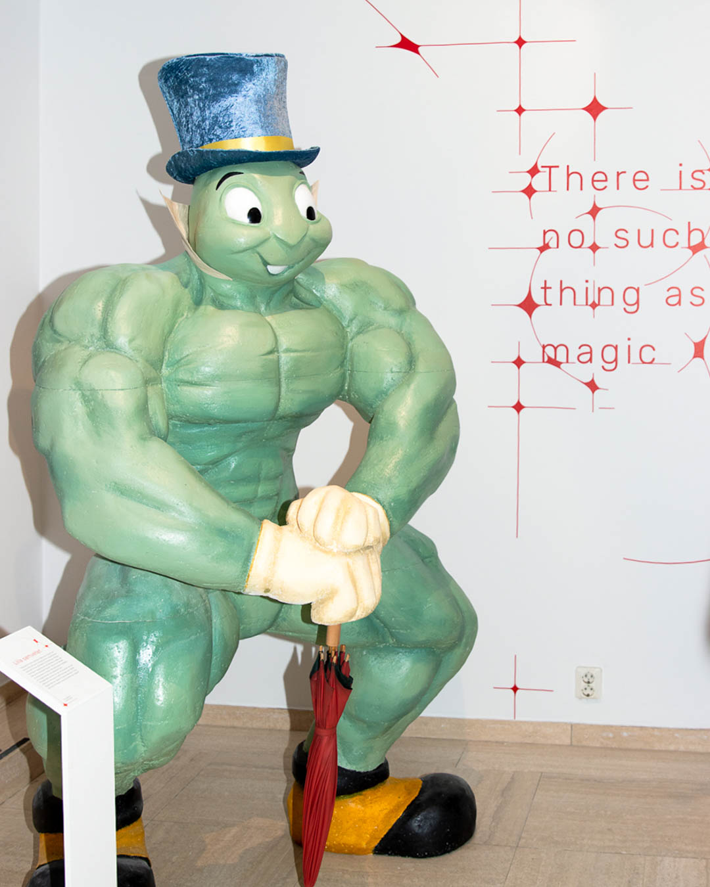
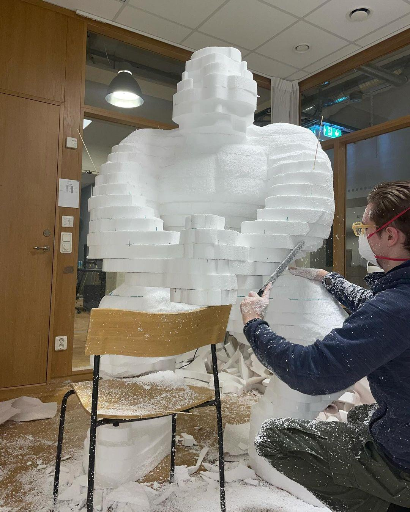
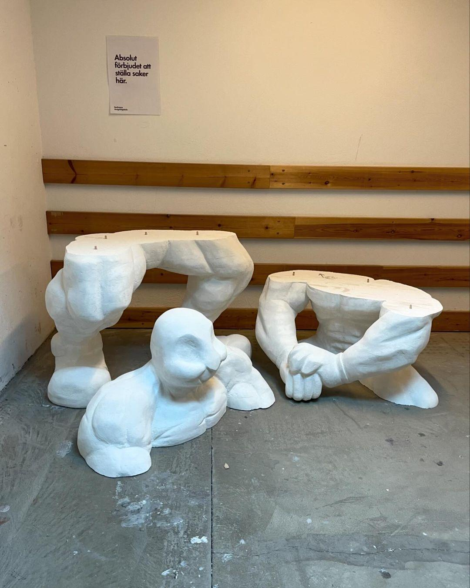
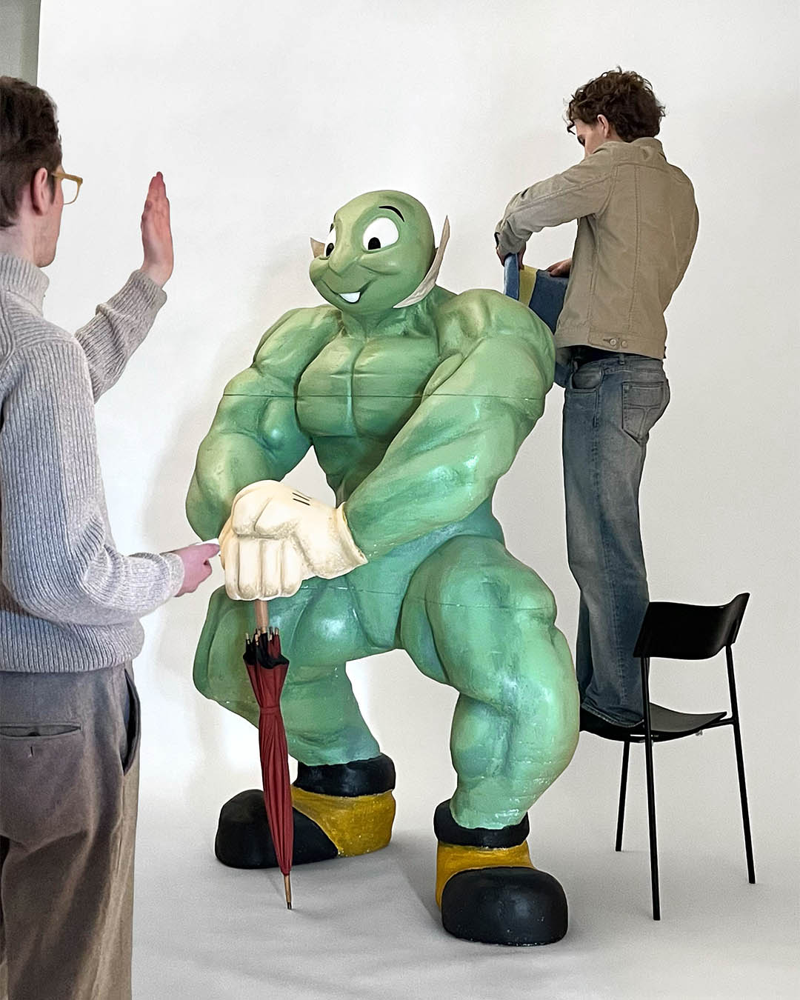
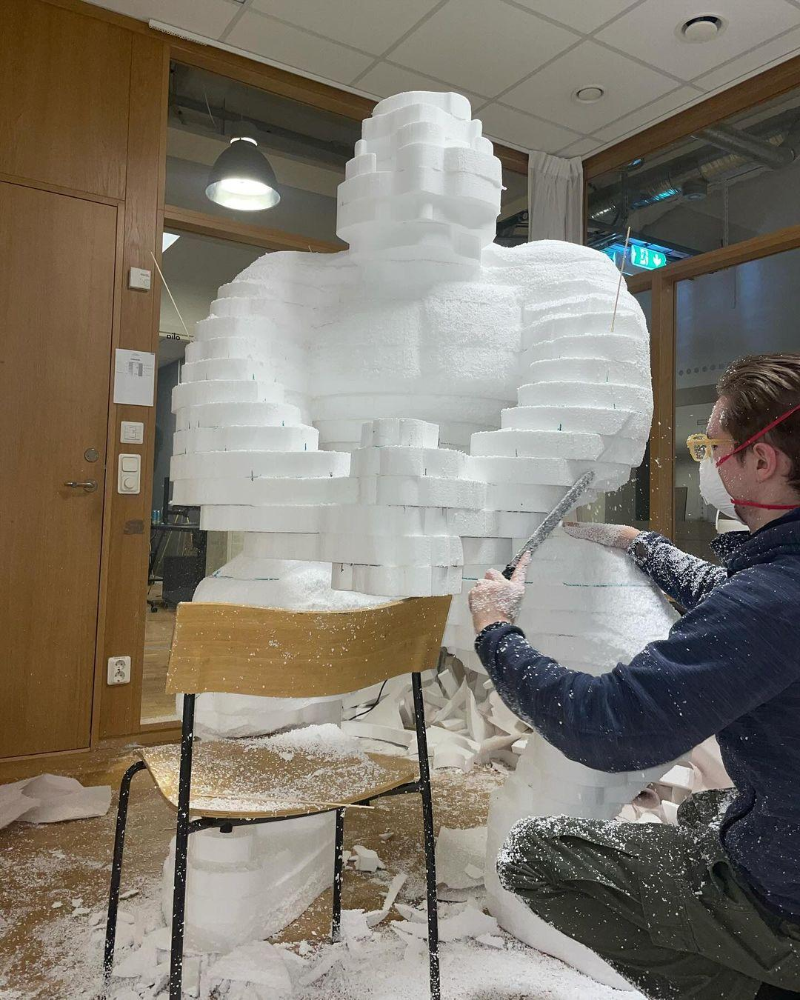
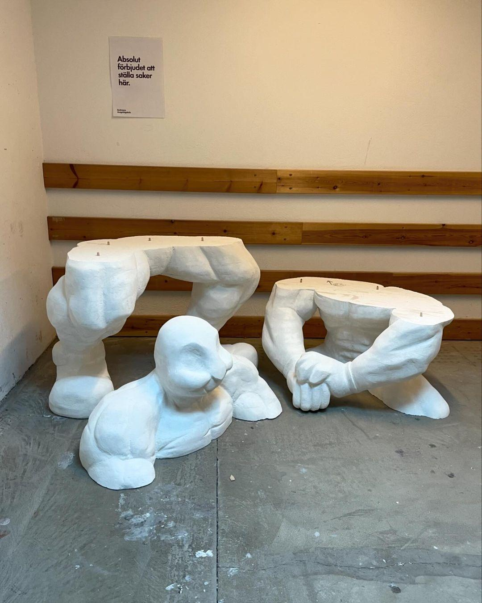
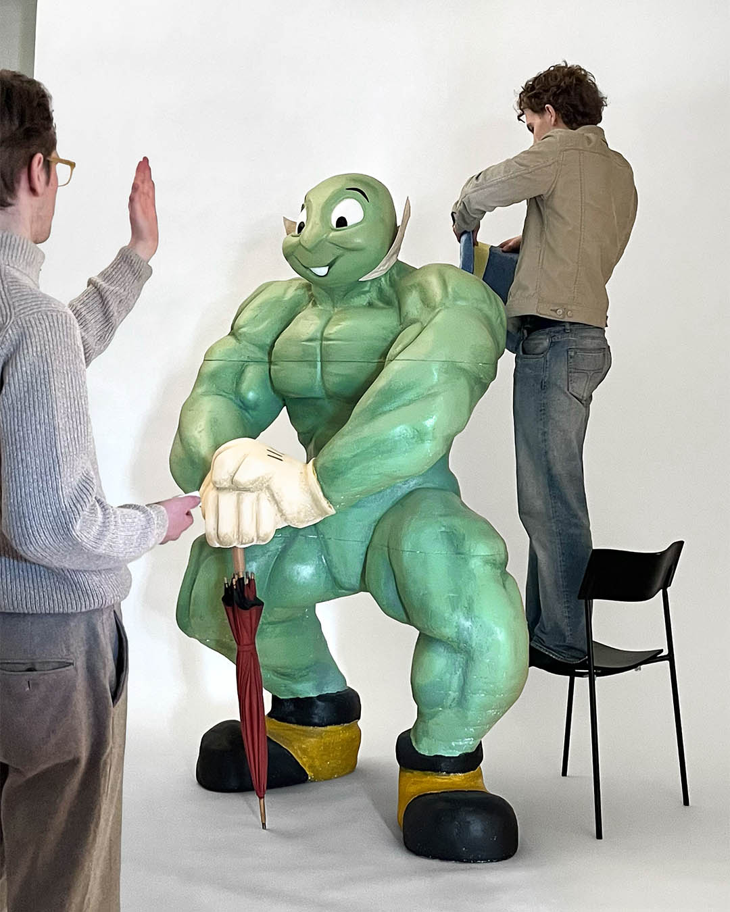
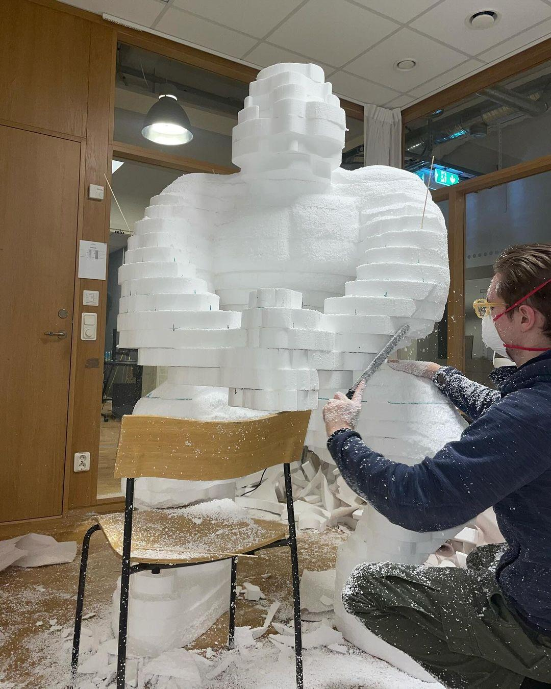
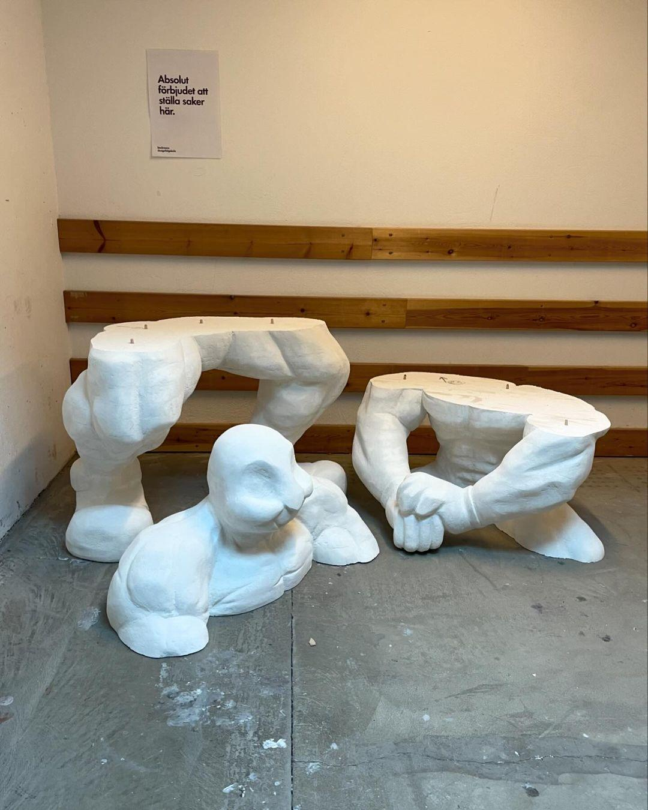
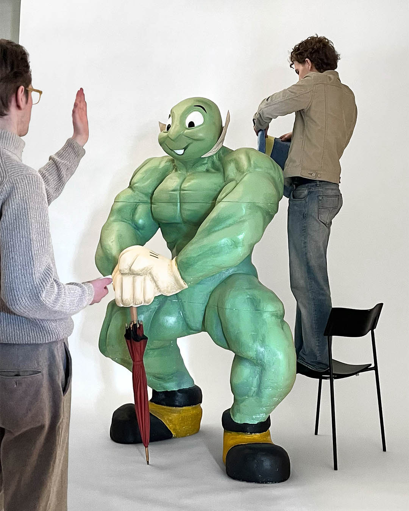

 








Lilla Samvetet
2024
Lilla Samvetet (”The Little Conscience”) is the result of a interdisciplinary collaboration between researchers at the Beijer Institute, Svenskt Tenn, and Beckmans College of Design.
The Beijer Institute has conducted immense research...